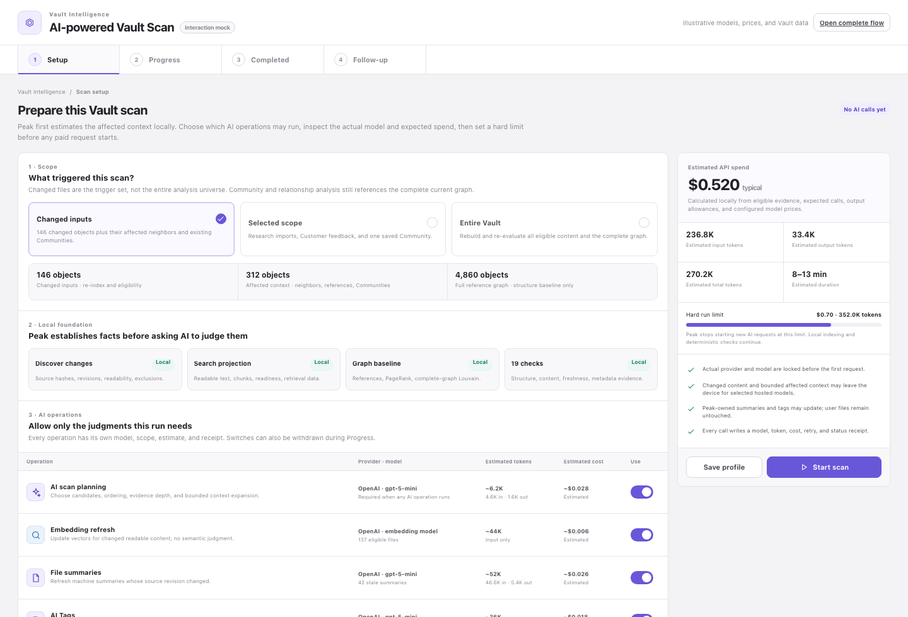
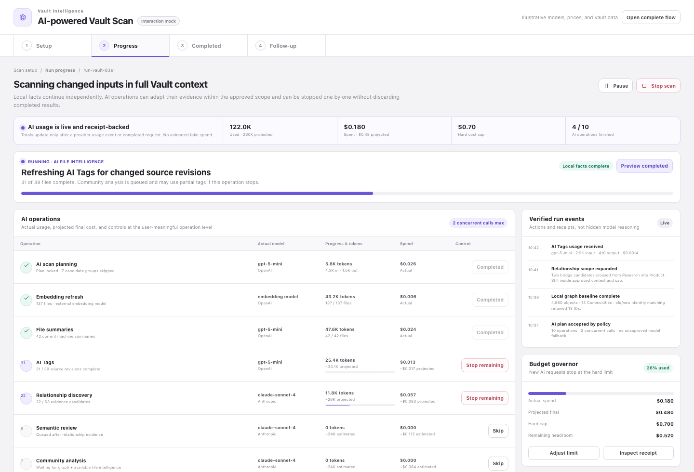
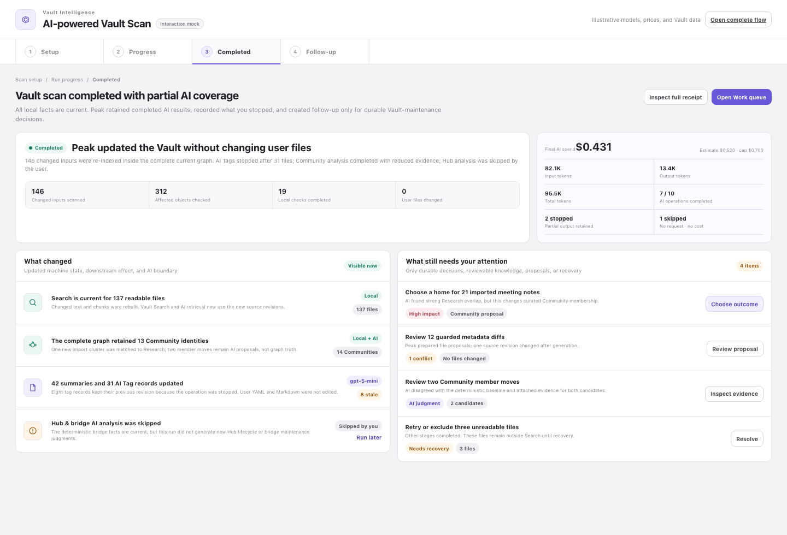
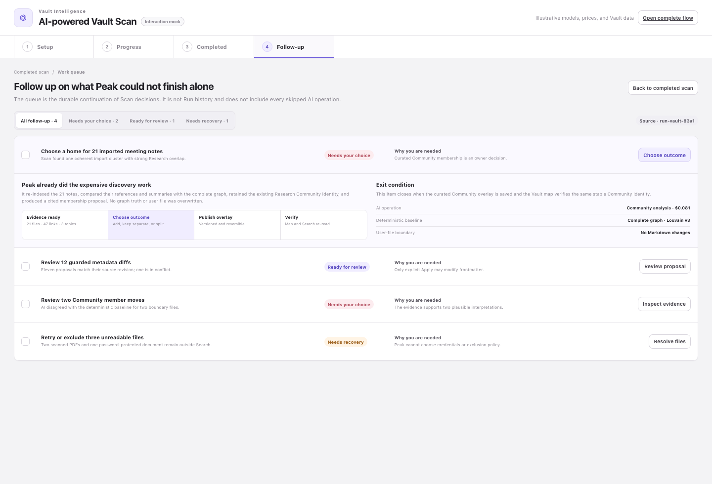

Setup范围、AI operations、实际模型、token/费用预估、hard cap、数据与写入边界。
一次 Scan 是一条有明确授权、模型、费用、停止语义和写入边界的知识库维护流程。Changed files 只负责触发；分析会叠加 affected context 和完整当前图。AI 可以动态规划和扩大证据，但不能越过 Setup 授权或预算。
Run 不是第四个长期工作区。Setup、Progress、Completed 是同一次 Scan；只有仍需用户处理的事项进入 Work queue。




从左向右阅读。每一列是一段时间；同一列的四条泳道同时说明用户、本地 runtime、AI 和持久化分别做什么。
不是单个巨大 Agent 调用。Coordinator 只在授权边界内编排；每项 operation 独立计费、独立停止、独立保存 receipt。
用户撤回的是“剩余授权”，不是抹掉已经发生的调用，也不是停止所有本地维护。
operation 尚未发出任何 provider request。立即从剩余计划和费用预测移除。
停止新请求并尝试取消 in-flight request。已经完成的文件或候选继续保留。
调用、token 和费用已经发生。用户只能在 Completed 决定 keep、discard、regenerate 或不 Apply。
到达 hard cap 后不再开始新 AI request；本地 indexing、checks 与结果持久化继续。
自动更新直接进入 Vault 状态；只有 Peak 不能独自完成的 durable maintenance work 才进入 Queue。
这些是实现和验收时的底线，而不是可选文案。